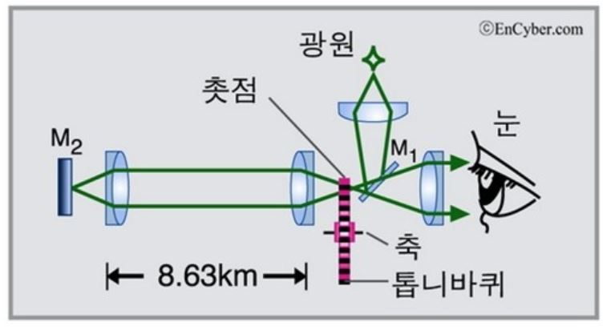
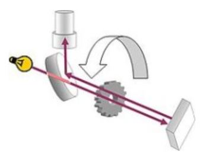
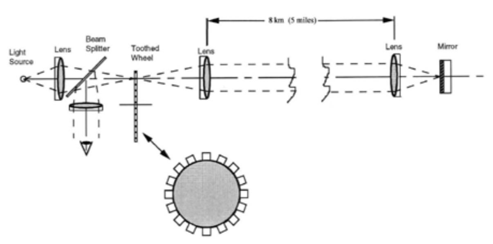

Ref : https://terms.naver.com/entry.naver?docId=1271096&cid=40942&categoryId=32238
https://m.blog.naver.com/PostView.naver?isHttpsRedirect=true&blogId=matphy&logNo=40203765576
https://www.vedantu.com/question-answer/in-an-experiment-to-measure-the-speed-of-light-class-12-physics-cbse-5f8b2b67b39c3957d63603df
https://spie.org/publications/tt82_25_speed_of_light?SSO=1



L : 톱니와 반사경사이의 거리 (8633m for Fizeau experiment)
N : 톱니수 (720 for Fizeau experiment)
T : 톱니 한바퀴 회전 주기 (period)
c : 빛의 속도 (Fizeau 측정결과, c=3.15e8 m/s)
계속 밝아지는 or 어두워지는 톱니회전속도를 찾는다면
c = 2L / (T/N) = 2LN/T
T = 0.0395 sec
톱니바퀴의 회전속도 = 25.34 revolution/sec = 1520 rpm
위 절반의 회전속도에도 의미있는 결과를 얻을 수 있을까?